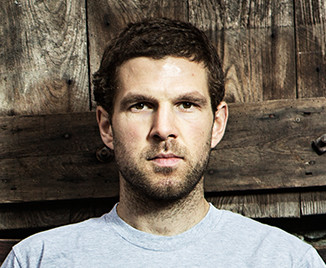

|
Daniel Simon Atherton, known as Dan Atherton (born 25 January 1982, near Salisbury), is a professional racing cyclist specialising in downhill, four cross and enduro-downhill mountain bike racing, and is a former national champion of Great Britain. He began riding BMX at the age of 15 and mountain biking a year later.
From 2007 till 2011, Atherton was one third of the Animal Commençal racing team, alongside brother Gee Atherton and sister Rachel Atherton.
He is now part of the GT Factory Racing team with brother Gee, sister Rachel and old friend Marc Beaumont, and is primarily racing Enduro-downhill and occasional downhill races.
Dan Atherton, along with Rachel and Gee, was the star of the web series The Atherton Project, which followed their day-to-day lives.
In 2010 Atherton broke a vertebra in his neck whilst dirt jumping and has missed half of the season including the World Championships.
After the 2012 season's end, Atherton won the Asia Pacific Downhill Challenge in Indonesia.
|
 |